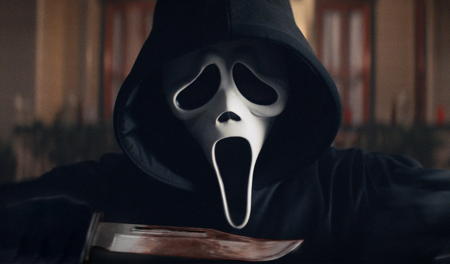

Noticias de películas
ANT-MAN AND THE WASP: QUANTUMANIA: BILL MURRAY, CONFIRMADO COMO EL VILLANO DE LA NUEVA ENTREGA
Leer Más...
"Mi poder es que soy un tipo malo"
Ahora que parece que Murray ha confirmado oficialmente que aparecerá en la nueva película de Ant-Man, nuestra atención ahora puede centrarse en especular sobre quién exactamente interpretará Bill Murray en la nueva película. Todo a su debido tiempo.
Tras las especulaciones de que la estrella de 'Cazafantasmas' se uniría a Paul Rudd en 'Ant-Man: Quantumania', el propio Murray ha confirmado que, después de todo, tendrá un papel en la película de Marvel.
En un chat en The Eli Manning Show, que se compartió por primera vez a finales del mes de diciembre de 2021, Murray confirmó no solo los rumores de su aparición en la nueva salida de Ant-Man, sino también que también interpretará a un villano.
"¿No estás en una nueva película de superhéroes? ¿Ant-Man?" Eli Manning cuestionó, a lo que Billy respondió casualmente: "Mmhmm, sí".
"¿Cuál es tu poder?" preguntó después Eli, lo que provocó que Bill agregara: "Mi poder es que soy un tipo malo".
La estrella había respondido previamente a los rumores de una aparición en 'Quantumania' en una entrevista con la revista alemana, Frankfurter Allgemeine Zeitung.
En octubre del año pasado, Murray le dijo a la publicación que recientemente había trabajado en una película de Marvel dirigida por el mismo cineasta que había llevado a nuestras pantallas la comedia épica de animadoras,'A por todas' ('Bring It On'). Y ese director, Peyton Reed, está detrás de la cámara para Quantumania. ¿Mucha coincidencia?
Si bien la respuesta de Murray sonó como una confirmación, más tarde se distanció de la especulación durante una aparición en el Jimmy Kimmel Live poco después.
"Se supone que no debo decir... Están haciendo una película, ¿de acuerdo?" dijo cuando Kimmel lo interrogó sobre la entrevista anterior. "Y tiene a Paul Rudd, que interpreta a Ant-Man, y está Evangeline Lilly, que interpreta a la Avispa. Y Michael Douglas, no recuerdo cuál es su nombre en la película, y Michelle Pfeiffer. Todos están en la película. Pero yo no estoy en libertad de hablar de ello".
Ahora que parece que Murray ha confirmado oficialmente que aparecerá en la nueva película de Ant-Man, nuestra atención ahora puede centrarse en especular sobre quién exactamente interpretará Bill Murray en la nueva película. Todo a su debido tiempo.
'SCREAM': TRÁILER, ACTORES QUE REGRESAN, GUIÑOS Y TODO LO QUE SABEMOS DE LA NUEVA ENTREGA
Leer Más...
Has recibido una llamada y es de un asesino en serie que te devuelve a la nostalgia de los años 90. En 2022 comprobaremos qué ha sido de Ghostface en la nueva entrega de la franquicia de Wes Craven.
"Se está repitiendo. Tres ataques llevamos. ¿Tienes pistola?". "Soy Sidney Prescott, claro que tengo". 25 años después, el terrorífico Ghostface ha regresado a la acción y ha perpretado una serie de brutales asesinos en la tranquila Woodsboro. El nuevo asesino tiene en el punto de mira a los protagonistas originales y Sidney Prescott y sus compañeros tendrán que descubrir qué quiere de ellos. Se destapa así una serie de secretos para los personajes de Scream y toda una caja de nostalgia para los espectadores que crecieron huyendo de las puñaladas del villano.
Este viernes 14 de enero, Paramount estrena la película que nos propone un viaje al pasado para reencontrarnos con David Arquette como Dewey Riley,Neve Campbell como Sidney Prescott y Courteney Cox como Gale Weathers, entre las nuevas incorporaciones. Los héroes harán equipo con un nuevo grupo de adolescentes que están en el punto de mira de Ghostface."Hay algo que parece distinto esta vez. No sé qué relación tendrá con nuestro pasado, pero nos ha traído otra vez hasta aquí y no pararé hasta verlo muerto", se escucha decir a Sidney en el tráiler que encontrarás sobre estas líneas.
Gracias a la sinopsis oficial, sabemos que el filme estará muy relacionado con las cintas anteriores: 25 años después de que una serie de brutales asesinatos conmocionara a la tranquila ciudad de Woodsboro, un nuevo asesino se ha puesto la máscara de Ghostface y ha comenzado a acechar a un grupo de adolescentes para resucitar los secretos del letal pasado de la ciudad.
Si aún no sabes nada de la nueva entrega de la saga, aquí resumimos todo lo que sabemos de la película, desde el tráiler y todos los detalles que desvela, hasta los esperados regresos de actores míticos o la fecha de estreno que todos esperamos con ganas.
¿Cómo conecta con la saga original? Una cinta llena de homenajes
Screames una continuación de la historia que todos conocemos y vuelve a tener a Sidney en el foco de la historia. Como cuentan en el avance, todos los ataques han sido dirigidos a personas que estaban conectadas con los asesinos originales. Teniendo en cuenta que se celebran 25 años de la primera cinta, es posible que el nuevo Ghostface sea un descendiente de uno de los criminales de la franquicia.
Todo está conectado con las primeras películas y debemos de ver el nuevo filme como una especie de homenaje a la saga, ya que el tráiler ha revelado muchos guiñosUno de los más destacados es la casa de Stu, que se convierte en el lugar de la masacre de Woodsboro en la cinta original. Más de dos décadas después, Sidney regresa a esta casa, seguramente en busca de respuestas.
Otro tributo que seguro que no se te ha escapado es la escena con la que comienza el tráiler, que conecta directamente con la genial secuencia protagonizada por Drew Barrymore de la que no hace falta decir mucho más.En esta ocasión es Jenny Ortega la que está acechada por el asesino, pero la esencia es la misma.
Los actores originales de 'Scream' que regresan
La nueva secuela de Scream llega con un reparto que es pura nostalgia. Al frente de los actores que vuelven está y su inolvidable Sidney Prescott, la víctima principal de la primera entrega. Como recordarás, todo comienza tras el asesinato de su madre, que lleva al descubrimiento de una serie de culpables entre los que se encuentra Billy Loomis, Mickey, su hermanastro y su primo.Su papel en esta película no es un simple cameo, sino que tendrá que enfrentarse una vez más a un enemigo que quiere acabar con los habitantes de Woodsboro. Lo que cambia aquí es que, por primera vez, ella llega a investigar el caso y no es quien está en el punto de mira. A priori.
Otra cara conocida que aparecerá por ahí es David Arquette, que regresa para ser el sheriff Dewey. Esperamos que siga siendo ese personaje entrañable y que pueda vivir tranquilamente, pero las imágenes del tráiler parecen ir por otro camino.Quizás sea el final definitivo del amistoso héroeA su lado estaráCourtney Cox como Gale Weathers, la reportera que se metía de lleno en la investigación de la identidad del asesino enmascarado. Hasta ahora ha salido airosa, pero todo puede cambiar en esta ocasión.
Por último, Marley Shelton volverá a ser la agente de policía Judy Hicks, la cual fue introducida en Scream 4. Quizás no sea una de las favoritas de los fans, pero toda ayuda es poca cuando se trata de vencer, una vez más, a Ghostface.
LOS NUEVOS PROTAGONISTAS
Además de reencontrarnos con el reparto original, la nueva Scream -que en Estados Unidos se conoce como Scream 2022- introduce a un grupo de adolescentes completamente nuevo. La protagonista es Melissa Barrera, que conoce a la perfección la historia de Sidney y podría estar conectada con la primera víctima de la película -la que vemos morir en el avance-. El resto de jóvenes están interpretados por Dylan Minnette (Por trece razones), Jasmin Savoy Brown (The Leftovers), Mikey Madison (Better Things), Mason Gooding (Love, Victor) y Sonia Ben Ammar en su primer papel.
FASE 5 DE MARVEL: TODAS LAS PELÍCULAS Y SERIES CONFIRMADAS (Y RUMOREADAS)
Leer Más...
Repasamos el calendario oficial completo de estrenos de películas y series de la Fase 5 del Universo Cinematográfico Marvel, ¡2024 está a la vuelta de la esquina!
Universo Cinematográfico Marvel y la apertura de este a los universos paralelos tras ‘Spider-Man: No Way Home’ y 'Doctor Strange en el multiverso de la locura' acaban de sentar las nuevas bases de lo que será el UCM en el futuro a partir de la fase 4 de Marvel; pero el estudio de los Vengadores va siempre unos cuantos pasos por delante y ya está preparando la próxima etapa.
La fase 5 de Marvel debería haber comenzado este 2022 pero la pandemia, como tantas otras cosas, también ha trastocado el calendario de estrenos de la compañía. Con el calendario de la fase 4 ya perfectamente establecido y sus fechas de lanzamiento reservadas, comienzan a llegar noticias y rumores de qué vamos a ver a partir de finales de 2023 y, sobre todo, en 2024. ‘Capitán América 4’, ‘Shang-Chi: 2’, ‘Spider-Man 4’, tal vez una nueva entrega de Vengadores… 2024 está a la vuelta de la esquina y nos tiene reservados una buena tanda de películas (y series).
Hasta donde sabemos, estas serán las películas y series de esta Fase 5 de Marvel:
'Blade' (Bessa Tariq) - Película
El reboot de 'Blade' va a introducir al vampiro caza-vampiros dentro del UCM con Mahershala Ali sustituyendo a Wesley Snipes como protagonista y con un guion escrito por Stacy Osei-Kuffour, una de las “story editor” de la magnífica ‘Watchmen’ (2019) de Damon Lindelof. Aunque fue anunciado en la Comic-Con junto a otros títulos de la fase 4, según ha sugerido Kevin Feige, podría moverse a la fase 5.
'Capitán América 4'
Con Steve Rogers (Chris Evans) retirado, la sucesión del Capitán América ha protagonizado una de las primeras series de la Fase 4 de Marvel. Ahora, después de 'Falcon y el Soldado de Invierno' y de que Anthony Mackie y Marvel hayan llegado a un acuerdo, ya es oficial que Sam Wilson será el próximo Capitán América en una nueva secuela del superhéroe. Malcolm Spellman, el creador de la serie, y Dalan Musson firmarán el guión de la película.
'Spider-Man 4'
El crossover de Peter Parkers de 'Spider-Man: No Way Home' ha supuesto un punto y aparte para el superhéroe de Tom Holland, ahora ya decididamente adulto. Aquí se abren dos posibilidades para la nueva secuela: o bien él repetirá con el personaje en una película que podría tener un tono radicalmente distinto o veremos el cierre de su arco dramático en otras entregas del UCM y aquí conoceremos a un sustituto de Spider-Man. Sea como sea, Marvel ya ha confirmado oficialmente que está trabajando en esta nueva historia.
'Shang-Chi 2'
“Los Diez Anillos volverán”, rezaba la última imagen de 'Shang-Chi y la leyenda de los diez anillos'. Primero lo hara, sin duda, en otras películas del UCM; pero el director y guionista Destin Daniel Cretton ha firmado también un acuerdo con Marvel para ocuparse de una secuela del superhéroe y de una serie, que podría centrarse en su hermana Xialing. Al superhéroe de Simu Liu le espera un papel muy destacado en esta nueva fase de Marvel y se rumorea que su historia podría cruzarse con la de Capitán América.
'Deadpool 3'
Desde que Disney adquirió Fox se espera la entrada de sus personajes en el UCM y muy especialmente una nueva entrega del gamberro y violentísimo superhéroe de Ryan Reinolds, el único personaje de Fox que mantendrá su continuidad. Kevin Feige ha garantizado que la secuela mantendrá la clasificación R y la película ya tiene en marcha el guión con Wendy Molyneaux y Lizzie Molyneaux-Loeglin reemplazando a los guionistas Rhett Reese y Paul Wernick de las anteriores.
'Vengadores 5'
Kevin Feige confirmó que veremos 'Vengadores 5' tarde o temprano y, según varios rumores, podrían llegar en esta Fase 5 del MCU. Probablemente no sea hasta 2025, como pronto. Así dará tiempo a que los nuevos héroes se asienten para que el público pueda empatizar.
'Nova'
La historia de Richard Rider, un adolescente de New York que obtiene poderes de un Centurión Nova del planeta Xandar, se lleva rumoreando mucho tiempo, y los rumores cada vez adquiere más fuerza. ¿Llegará a tener su propia película en solitario después de todo?
'HARRY POTTER': TOM FELTON CALIFICA LA REUNIÓN COMO "SURREALISTA"
Leer Más...

La estrella de 'Harry Potter', Tom Felton, ha hablado sobre su participación en la reunión especial de la franquicia por su vigésimo aniversario. El actor que dio vida a Draco Malfoy se unió recientemente a sus compañeros de reparto en 'Harry Potter: Regreso a Hogwarts', el especial de HBO que se estrenó el día de Año Nuevo.
En declaraciones a The One Show el pasado martes 11 de enero, Felton dijo: "Fue surrealista volver de nuevo al gran comedor y ver a todos mis compañeros de escuela, por decirlo de alguna manera". "Lo que fue algo raro pero genial fue lo poco que nos costó coger confianza y sentir que la vida normal de aquella época había vuelto. Fue muy divertido"
El reparto de la saga se reunió 20 años después del estreno de 'Harry Potter y la piedra filosofal'.
Lo que también podría haber sido surrealista para Tom fue la revelación de su compañera Emma Watson de que se "enamoró" de él durante el rodaje. En el especial, Watson recordó el momento en que se enamoró de Felton y dijo: "Entré en la sala donde teníamos clase. La tarea que nos habían asignado era dibujar cómo pensábamos que era Dios y Tom había dibujado a una chica con una gorra hacia atrás en un monopatín. Y simplemente, no sé cómo decirlo, simplemente me enamoré de él".
Watson luego añadió: "Solía llegar todos los días y buscar su número en la hoja de llamadas. Era el número siete, y si su nombre estaba en la hoja de llamadas, entonces era un día muy emocionante".
Watson continuó diciendo que nada "nunca, nunca, nunca" sucedió entre ellos en un sentido romántico, pero admitió que "simplemente se quieren" ahora (pero no románticamente).
Felton dijo sobre descubrir el enamoramiento de Watson: "Creo que estaba en la silla de peluquería y maquillaje y alguien me dijo algo como, 'Sí, ella estaba enamorada de ti'". Continuó: "Me volví muy protector con ella. Sí, siempre he tenido debilidad por ella y eso continúa hasta el día de hoy".
'MORBIUS': FECHA DE ESTRENO, SINOPSIS, TRÁILER Y TODO LO QUE SABEMOS DEL VAMPIRO DE MARVEL
Leer Más...
La adaptación cinematográfica de 'Morbius: el vampiro viviente' cuenta con Jared Leto como protagonista, y aquí recopilamos todo los que sabemos.
'Morbius' es uno de los proyectos más esperados (y enigmáticos) del calendario cinematográfico. Sony Pictures decidió, al ceder los derechos de Spider-Man a Marvel, que podría explotar el resto de catálogo de personajes que conforman los cómics de Spidey. Y ahí tenemos 'Venom', película con la que nadie contaba a priori, pero que hizo más de 800 millones en taquilla, y que ya tiene su secuela en cines, 'Venom: Habrá Matanza'. ¿Podrá 'Morbius', con Jared Leto como protagonista, conseguir lo mismo?
Siguiendo la estela de este éxito sorpresa, Sony ha decidido seguir ampliando su propio universo cinematográfico y ahora le toca el turno a Morbius, conocido como el vampiro viviente, y que ha servido como villano de Spider-Man, pero también como anti-héroe atormentado. Aunque forma parte de las películas exclusivas de la productora, ya sabemos algo muy importante sobre la producción: 'Morbius' conectará tanto con 'Venom 2' como con el Spider-Man del Universo Cinematográfico de Marvel (UCM), al que da vida Tom Holland. De hecho, como ya hemos visto en 'Spider-Man: No Way Home', hay una conexión entre los personajes de Sony y los de Marvel Studios. Morbius se prepara para ser el siguiente, aunque los retrasos provocados por la pandemia de COVID-19 está alargando la espera más de lo que esperábamos.
Si ya estás sediento de sangre por 'Morbius', respondemos a todas las preguntas: ¿Cuál es la fecha de estreno definitiva de 'Morbius'? ¿Y su sinopsis? ¿Compartirá universo con 'Venom'? ¿Quién está en el reparto? ¿Estará Spider-Man? ¿Cuándo tendremos tráiler o imágenes de la película? ¡Iremos actualizando la información!
'Morbius': fecha de estreno
Menudo viaje ha tenido la >fecha de estreno de 'Morbius'. Originalmente, estaba programada para estrenarse en la primavera de 2020, pero la pandemia arrasó con el calendario de películas en los cines y tuvo que retrasarse hasta siete veces. Pasó por el verano de 2020, de ahí al otoño, en varios puntos de 2021... Parecía que el 28 de enero de 2022 iba a ser la definitiva, pero finalmente tenemos una fecha que parece inamovible: el 1 de abril de 2022. ¿Aguantará después de dos años de retrasos?
'Morbius': Sinopsis
La sinopsis de 'Morbius' ya es oficial: "Uno de los personajes más convincentes y conflictivos de Marvel llega a la gran pantalla. El ganador de un Oscar Jared Leto se transforma en el enigmático antihéroe Michael Morbius. Enfermo con un peligroso y raro trastorno sanguíneo, está decidido a salvar a otros que sufren su mismo destino. El Dr. Morbius lleva a cabo una arriesgada apuesta. Lo que al principio parece ser un éxito radical, pronto será la prueba fehaciente de que el remedio, a veces, es peor que la enfermedad".
Vale, a ver, ¿quién demonios es Morbius? Se trata de uno de los villanos de Spider-Man cuya verdadera identidad es la de un ex-bioquímico llamado Michael Morbius que, tras un experimento fallido para curar su trastorno sanguíneo, acabó con habilidades sobrehumanas y rasgos físicos vampíricos. La primera vez que le vimos fue en 1971 luchando contra el Hombre Araña.
Sobre la película ya sabemos ya varias cosas. Primero, que será una película de terror con tintes de acción. Es una perspectiva refrescante que, además, complementa a la perfección a 'Venom', que tiene un tono más de comedia de acción. También han dejado claro desde Sony que Morbius no será un villano, sino un antihéroe, es decir, que tiene cualidades de redención al igual que Venom, y es que sería muy difícil convertirlo en protagonista si no fuese así. La película tendrá además un toque gótico bastante presente.
Y ojo: 'Morbius' compartirá universo con 'Venom' y el Spider-Man del UCM. En la escena poscréditos de 'Spider-Man: No Way Home' ya vimos cómo podría suceder algo así, aunque no sabemos hasta qué punto o de qué manera sucederá esa mezcla de personajes.
En esta última imagen pertenece a un perfil de Instagram, cuenta que ha usado Marvel para promocionar 'Spider-Man: lejos de casa', ya que es un perfil falso de Flash Thompson. Y ahí vamos a encontrar la siguiente conexión entre todos los universos: vemos referencia a 'Venom' ('El asesino Kasady se ha escapado') y 'Morbius' ('¿Vampiro suelto en Nueva York?').
'Morbius': Reparto
El primer miembro del reparto de 'Morbius' confirmado fue Jared Leto, que interpretará al protagonista. El actor, que también forma parte del Universo DC (interpretó a Joker en 'Escuadrón Suicida'), da el salto al Marvel de Sony. Pero no estará solo. Matt Smith es otro de los fichajes de la película, e interpretará al villano del film, Loxias Crown, amigo de Morbius, y con la misma enfermedad que el protagonista.
Tyrese Gibson, al que hemos visto en la saga de 'Fast & Furious', interpretará a una agente del FBI encargada de investigar los asesinatos cometidos por Morbius y su sed de sangre. Este agente del FBI tendrá un brazo robótico capaz de hacer todo tipo de cosas, como dijo el mismo actor en una entrevista: "Ese brazo tiene todo tipo de efectos especiales y poderes, y eso va a dejar alucinada a la gente cuando vean esta película. He hecho algunas cosas de superhéroes, pero nunca he sido un superhéroe. Tuve que explicárselo a mi hija".
Adria Arjona ('True Detective' temporada 3 será Martine Bancroft, la prometida de Morbius, y que luchará junto a él para encontrar una cura. Y, por último, estará también Jared Harris, hijo del mítico actor Richard Harris, al que conocimos como Moriarty en 'Sherlock Holmes: juego de sombras' (y no sabemos si estará en 'Sherlock Holmes 3'), pero su papel es secreto por ahora.
Una de las curiosidades que nadie esperaba con esta película es que cruzara directamente con el UCM, pero tras ver el tráiler, podemos confirmarlo, ya que aparece Michael Keaton, que interpretó a El Buitre en 'Spider-Man: Homecoming'.
'Morbius': Director
El director de 'Morbius' es Daniel Espinosa, realizador de películas como 'Life', de la que se especuló que sería precuela de 'Venom', o 'El invitado', cinta de acción con Ryan Reynolds.
'Morbius': Tráiler
El tráiler final de 'Morbius' fue lanzado en el otoño de 2021, y luce así de bien:
Estrenos de la semana

Scream
Director : Matt Bettinelli-Olpin
Reparto Neve Campbell, Courteney Cox, David Arquette
Lunáticos
Director : Ali Samadi Ahadi
Madeleine Collins
Director : Antoine Barraud
Reparto Virginie Efira, Bruno Salomone, Quim Gutiérrez